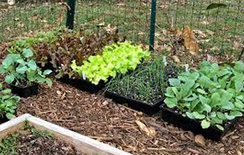
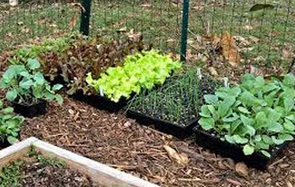

Our garden plots measure approximately 20' x 20' (400 sq.ft.). The maximum number of plots per gardener is 4 plots. Gardeners may work in their plots at any time of the year, provided they follow the garden rules. Only organic gardening methods are allowed. We do not till any sections of our gardens, which allows gardeners to plant perennials such as asparagus and strawberries and leave up fences, if desired, throughout the year.
$15, $43, or $78 per plot/year, depending on your income level and size of household/garden family.
Water is provided on site throughout the season. Garden tools are available for everyone to use. Free wood chips are provided gardener use. We offer hay and row cover for sale on our application.